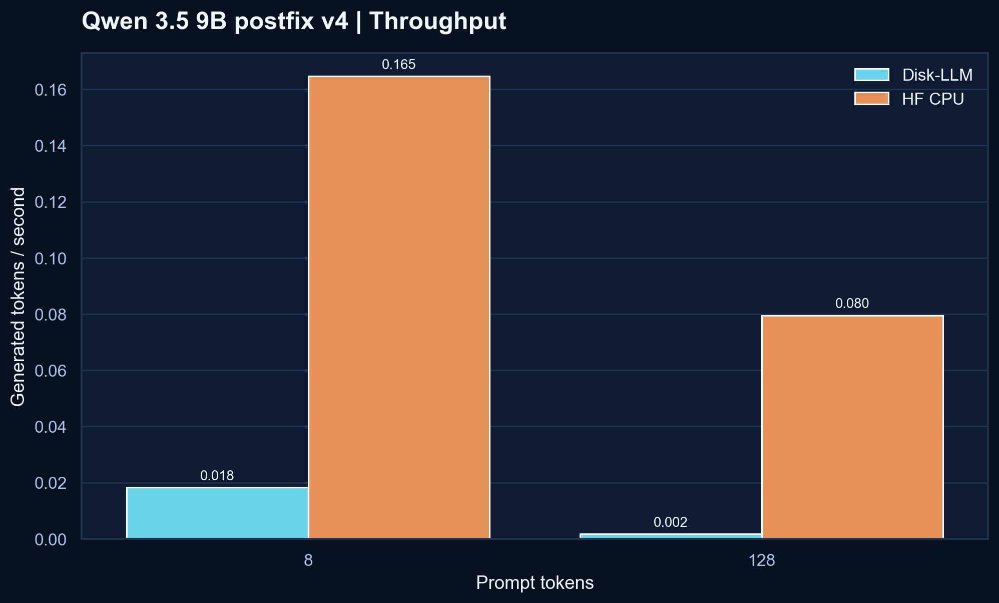
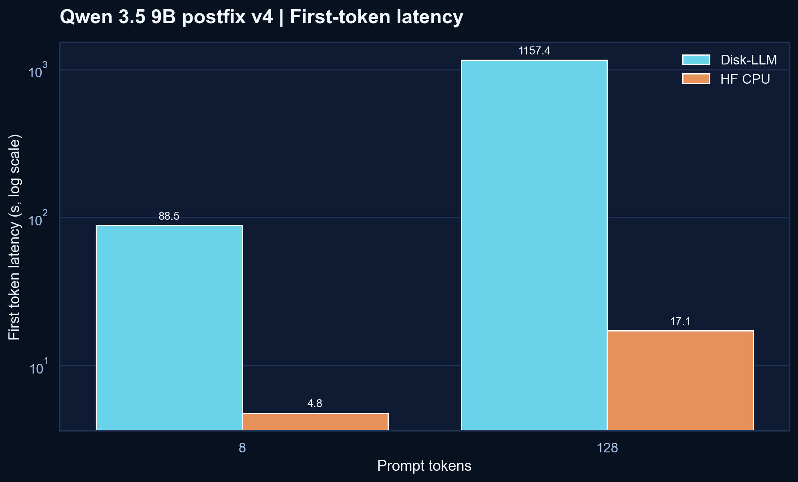
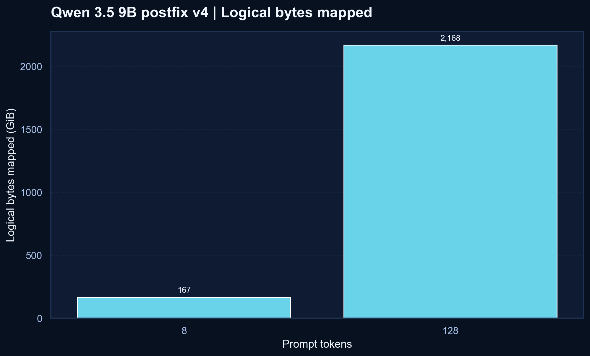
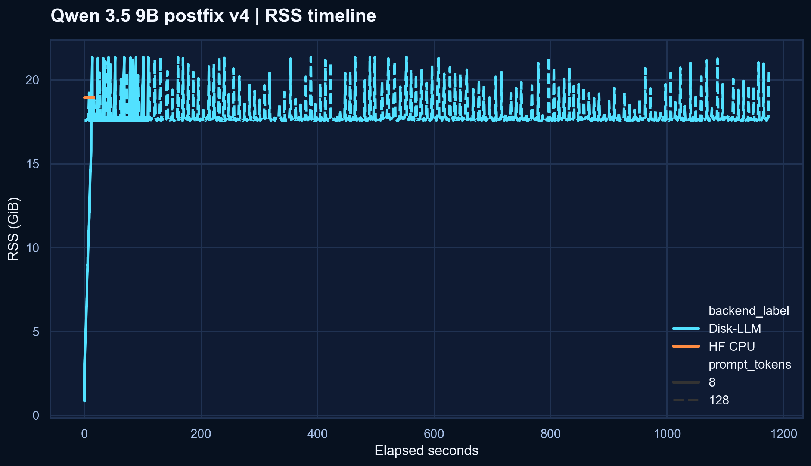

The current Qwen result is still slower than HF CPU, but v4 moved the baseline forward.
Disk-LLM is an inspectable disk-backed LLM research kit. After the HF CPU image cleanup and a small runtime caching pass, the latest validated full-model Modal run for Qwen/Qwen3.5-9B is now published here as v4: real plots, real CSV-backed numbers, and a measurable improvement over v3 without hiding the remaining gap.
qwen35-9b-postfix-v4
32 layers exercised
427 tensors touched
resolved SHA c202236
v3 snapshot, Disk-LLM throughput improved by 24.4% at 8 prompt tokens and 31.2% at 128 prompt tokens, while peak RSS fell by about 2.6 GB. HF CPU still wins this matchup.

The packed artifact is stable, and the runtime path is improving, but it still needs more work.
The storage-side story is steady: the pack is still compact enough to inspect and the full-model path is still honest. What changed in v4 is that the validated baseline moved in the right direction without changing the project's native NumPy memmap identity.
The public visuals now come from the tracked v4 CSV bundle, rendered again for the site with seaborn.
These plots come from the tracked result bundle at modal-results-postfix/qwen35-9b-postfix-v4. They are the current evidence layer for the project and should still be read as a research snapshot, not a victory screen.
v3, but Disk-LLM still trails the HF CPU reference at both prompt lengths in this validated run.
v4 shaved meaningful time off both prompt cases compared with v3.

v3, but it still peaks above the HF CPU reference on this Modal setup.v4 is better than v3, but the honest reading is still that Qwen is not yet competitive here.
The old checked-in postfix bundle looked much better, but it was not a trustworthy full-model comparison. This table reflects the current validated path instead.
| Prompt | Backend | Tokens/s | First token | Peak RSS | Logical mapped | Read |
|---|---|---|---|---|---|---|
| 8 | Disk-LLM | 0.0183 | 88.501 s | 21.87 GB | 170,780 MB | v4 improves on v3, but HF CPU is still much faster |
| 8 | HF CPU | 0.1646 | 4.773 s | 19.40 GB | - | Current reference |
| 128 | Disk-LLM | 0.00170 | 1157.395 s | 21.89 GB | 2,220,144 MB | Better than v3, but prompt scaling is still the main pain point |
| 128 | HF CPU | 0.0795 | 17.142 s | 19.41 GB | - | Current reference |
Why publish this anyway.
Disk-LLM is a research repo. The point is not to only show flattering artifacts. The point is to make the storage path, runtime path, and benchmark truth visible enough that improvements can be measured honestly.
The most useful finding from this rerun is that v4 is now a better full-model baseline than v3 without changing the project's core identity. The repo can now show both things at once: the current comparison is still unfavorable, and the direction of travel is finally measurable.
- The earlier checked-in bundle at
qwen35-9b-modal-cpu-postfixremains a legacy pre-guard artifact and should not be treated as the current headline. - The new public charts are rendered from the tracked
qwen35-9b-postfix-v4CSV bundle, not copied from decorative SVGs. - The next benchmark work should branch from this validated
v4baseline: matching prefetch runs, more small runtime tweaks, and then broader Qwen sweeps.